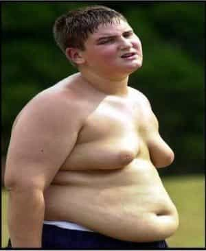
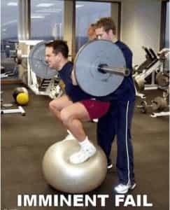
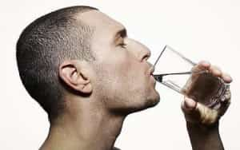
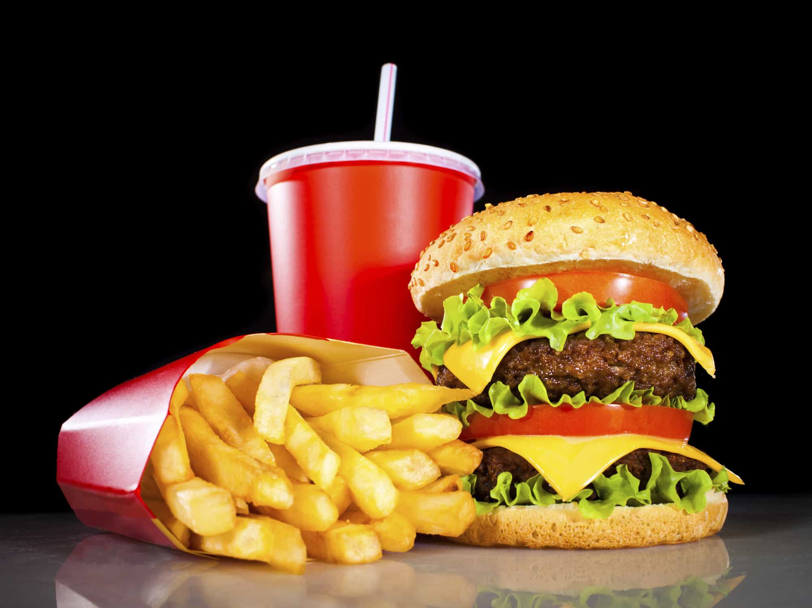

< < < Back
10 Steps To Stop Being A Fatass – Return Of Kings
One of the primary tenets of the neomasculine movement is keeping your body in good condition, or to put it more bluntly: don’t be a typical pot-bellied neckbeard who gets winded opening a can of Pringles. Like anything else in life, your physical stature can be traced back to your habits; good habits will get you the body you want, bad habits will turn you into a miserable fatass.
It’s a glandular problem
Some of you reading this have ripped chests, shredded abs and look like a million bucks. Well done and keep up the good work. But it is a statistical guarantee that many of you are obese and cannot seem to right the ship. You’ve tried fad diets and gym memberships but still you’re struggling to find your dick when you look down. The following are simple tips, tricks and realizations that will help you drop the weight.
This is not an article about how to get ripped. This is guide on how to fix a situation that has gotten completely out of control, written by a man who was once 300lbs+ and has lost 100lbs+ (and counting).
1. Realize That You Didn’t Gain 100 Pounds Overnight
None of us were born fat; we got there by making some really bad choices, like eating fast food or buttering up our morning coffee.
Maybe we were athletes in high school, got to college, and stopped playing sports, discovered beer and the 24-hour drive-thru. Here’s the point: it took years to get to this level and you need to understand that it will likely take years to get back to where you want to be.
It’s hard to have this attitude in a world where everyone wants everything done on the spot, but as soon you can accept the reality of the situation the improvement process can begin.
2. Set Reasonable Goals
So you want to lose 50 pounds? Great! You want to lose it in a month? Unless you adopt a steady diet of Marlboro reds and blow, it’s not happening. Trying to lose that much weight in such a short amount of time is not good for you (there’s a reason contestants on The Biggest Loser have serious health issues after leaving the show).
Here is a much better weight loss goal: lose one pound a week. Yeah, it’s slow, but it’s also reasonable, healthy, and attainable. At a pound a week you would hit your goal in one year with gradual changes you can stick to, which segues nicely into…
3. Don’t Try Drastic Dietary Changes

So right now you’re eating fast food, drinking soda daily and freebasing cookie dough. You decide enough is enough and come up with a plan: plain oatmeal for breakfast, a salad for lunch, a chicken breast with a side of broccoli for dinner and no more soda, just six glasses of water a day.
You will not last a week. You’ll do great on Monday and go to bed at night feeling good about your new lifestyle. Tuesday comes and you forget to grab the salad from the refrigerator in the morning, so you grab a burger because you have to eat something or you’ll be “starving” all day. Wednesday you remember the salad but forgot that it was Janet in accounting’s birthday and you all chipped in for a cake.
Thursday night you are making your chicken and dreading the thought of more veggies after that lunch salad so you decide to cook up some fries. Friday is happy hour and you can’t skip that, so you go out for some wings and mozzarella sticks while washing it down with four beers or sugary mixed drinks. Sound familiar?
Look, most people cannot live one way for years and do a complete 180 overnight. Instead, try to make simple, gradual changes. Do you drink a 20oz Pepsi with lunch and have dessert three nights a week? Start here: replace the soda with a glass of water and make dessert one night a week. It will be much easier to sustain.
4. Don’t Make The Same Mistake With Exercise

You sign up at your local gym, promise yourself that you will go every day before work, and it goes down the same way as your new food plan: you start off well but fade after a few days. A couple weeks go by and you realize the problem is how early you have to get up so you decide to go after work, but you’re too tired and end up going home instead. A month goes by and you have nothing to show except twenty bucks being debited from your account.
It’s the same principle with exercise as it is with food: you’ll likely fail trying to go from 0 to 60. If your current exercise routine consists of walking four blocks to McDonalds then you’re probably not going to start hitting the gym five days a week. Instead, try doing 20-30 minutes of basic exercises a day.
Once this becomes too easy for you add some extra cardio, a few more reps to the exercises and then consider a local gym for weight training or better yet just buy some free weights if you have the space.
5. Stop Picking At Food

Anyone who has struggled with weight has made this mistake. You’re making dinner and apparently cannot wait fifteen more minutes, so you open a bag of chips and decide to just have a few. Of course, a few becomes twenty and when dinner is finally ready you’ve already eaten a few hundred calories.
Practice small acts of self-control every day. When you find yourself reaching into that bag just stop, wrap it up (or better yet throw them out) and wait the ten minutes. You’ll be proud you did and have a lot to show for it over a long period of time.
6. Learn How To Say No
Let’s use that Janet in accounting example again. You’re trying your best to lose weight; making small cuts to your normal diet, doing the room exercises and not food picking anymore. So when your co-worker walks over to you and shoves a piece of cake in your face you politely decline and are immediately barraged with a flurry of comments about how you have to have cake for Janet, it’s just one piece, it won’t kill you, etc. When you keep declining people start taking sarcastic jabs at you and finally you eat the damn cake just to shut everyone up.
Don’t give into peer pressure. You don’t have to do anything you don’t want to and that includes stuffing your face with a piece of cake at 10:30 in the morning. Make it a matter of pride; when someone persists tell them you value your health too much but if they want to have your piece they can go right ahead. Stop worrying about hurting everyone’s feelings.
7. Surround Yourself With The Right People
Accept this sad truth: some people want you to fail at bettering yourself. Not all of them, but enough. On your quest to lose weight you are going to encounter people who flat out want you to fail so that they can feel better about themselves. My mother can personally attest to this: she was morbidly obese through most of my childhood and finally decided to do something about it. She dropped close to 200 pounds over the course of several years and looks great today.
At first family and friends were supportive of her efforts, encouraging her to keep walking and making good eating choices. But then something started to happen as she kept losing weight: the supporters gradually became detractors. Suddenly they were telling her to slow down, that she was losing too much weight and starting to look unhealthy.
The reality was a lot of insecure people hated the fact that they couldn’t improve their physical well-being the way she was doing. She actually lost several friends and her sister doesn’t talk to her to this day all because of her weight loss.
Take inventory of the people in your life: do they have your back, offer constructive criticism and congratulate you on your achievements? Or do they belittle your efforts, offer nothing but sarcastic comments and ignore your goals?
Don’t be afraid to drop your so-called friends because you’ll be surprised how many of them won’t be around after you get in shape.
8. Stop Eating When You’re Actually Just Dehydrated

This is a simple one that most of us know by now. When you feel hungry even though you just ate recently, chances are you’re simply dehydrated. Most people do not drink enough water and it can confuse our bodies. This is one of the easiest strategies on the list: if you feel hungry have a big glass of water and wait 20 minutes. If you’re still hungry then go for it, but you’ll be surprised how often it works.
9. You Have Too Much Food In Your House
Why do you have three bags of chips, four two liters of soda, brownie mix, two loaves of bread, a sleeve of cookies, six boxes of mac and cheese and a bag of candy in your house? You are far more likely to satisfy a junk food craving if that shit is already in your house than if you’d have to drive to the store to buy it.
Clear out your cabinets and the refrigerator then try stopping at the store every few days and just buying enough for your next four to six meals. Shop after you’ve just eaten as it will deter you from making poor buying decisions.
10. You think Every Time You’re Hungry You Need to Eat Immediately

I’m not advocating starving yourself (although there are benefits to intermittent fasting). I’m saying you should try to experience hunger on occasion rather than sprinting to the deli every time you get a pang in your stomach.
So much of weight loss is mental and we have to learn to overcome. The first time you decide to go hungry it will be a surreal feeling. You’ll build character, burn more fat, gain some pride and build some mental strength.
Like everything else discussed above, start slow and work your way up. As an added bonus the food will taste better and be far more satisfying. You can start to actually enjoy meals instead of blindly stuffing your face.
The above are ways to remedy bad habits that can be encountered on the way to obesity. Recognizing and overcoming these will put you on a path to getting healthy. If you’re currently 50lbs or more overweight start here, lose the fat, then move on to the next level.
Read More: A Simple, Effective Way To Review Your 2014


{kind=link}
{kind=link}
{kind=link}
{kind=link}
{kind=link}
{kind=link}
{kind=link}